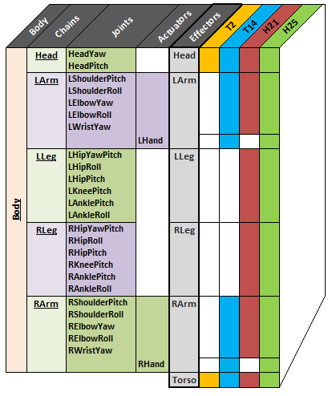
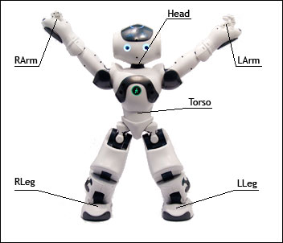

Effector & Chain definitions¶

{kind=link}
This overview points out the relationship between the different names and specifies which model includes which joint:
- Body = all Joints + the 2 Actuators added at the end of the arm links
- Chain = Joints + Actuators
- Effectors = all Chain names + Torso
Effectors¶
{kind=link}
These Effector names are identical to the Chain name except for “Torso”.
| Effector name | Position | End transform |
|---|---|---|
| “Head” | At the neck joint | Position3D(0.0, 0.0, 0.0) |
| “LArm” | Inside the hand | Position3D(HandOffsetX, 0.0, -HandOffsetZ) |
| “LLeg” | Below the ankle | Position3D(0.0, 0.0, -FootHeight) |
| “RLeg” | Below the ankle | Position3D(0.0, 0.0, -FootHeight) |
| “RArm” | Inside the hand | Position3D(HandOffsetX, 0.0, -HandOffsetZ) |
| “Torso” | A reference point in the torso | Position3D(0.0, 0.0, 0.0) |
All the points are defined in relation of the Torso position and depend of your NAO - Version.
To see the position of Effectors, see:
- NAO V4: Links
- NAO V3.3: Links - V3.3
- NAO V3.2: Links - V3.2
For further details, see: Effectors.
Chains¶
The table below lists the chains and all the joints included in each chain:
| Body is ... | Head + LArm + LLeg + RLeg + RArm | ||||
|---|---|---|---|---|---|
| The chain ... | Head | LArm | LLeg | RLeg | RArm |
involves the joints ... |
HeadYaw | LShoulderPitch | LHipYawPitch1 | RHipYawPitch1 | RShoulderPitch |
| HeadPitch | LShoulderRoll | LHipRoll | RHipRoll | RShoulderRoll | |
| LElbowYaw | LHipPitch | RHipPitch | RElbowYaw | ||
| LElbowRoll | LKneePitch | RKneePitch | RElbowRoll | ||
| LWristYaw2 | LAnklePitch | RAnklePitch | RWristYaw2 | ||
| LHand2 | RAnkleRoll | LAnkleRoll | RHand2 | ||
Note
1 LHipYawPitch and RHipYawPitch share the same motor so they move simultaneously and symmetrically. In case of conflicting orders, LHipYawPitch always takes the priority.
2 These joints do not exist in the NAO - Body type “H21”.
The group “Body” addresses all the joints of the robot (the number of joints depends on your NAO - Body type).
It is possible to get the list of joints available on your robot using the
ALMotionProxy::getBodyNames method, described in the section:
Case 2: Programmatic access to Joint Names.
Joint range and direction¶
Depends of your NAO - Version, you could access to the joint range and direction by following the link below:
NAO V4
NAO V3.3
NAO V3.2
For further details, see: “Body”, chains and joint names.